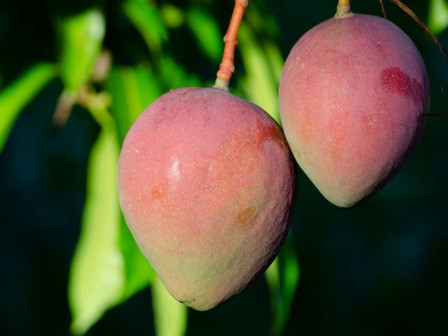
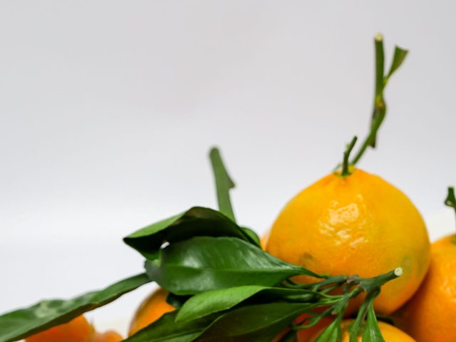
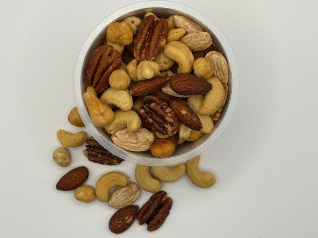
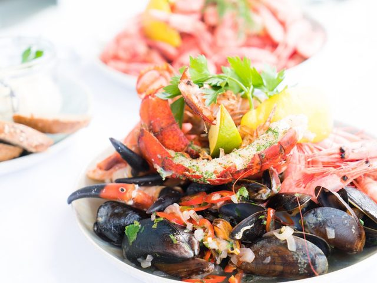
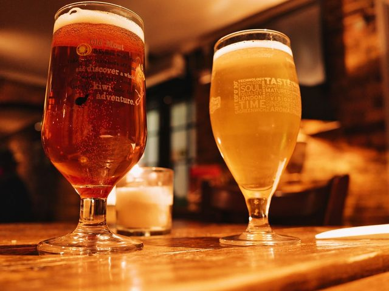
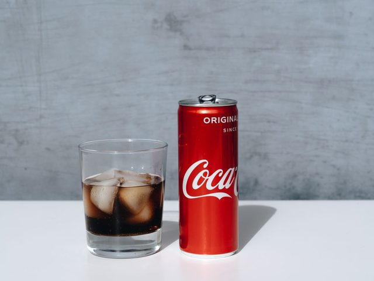
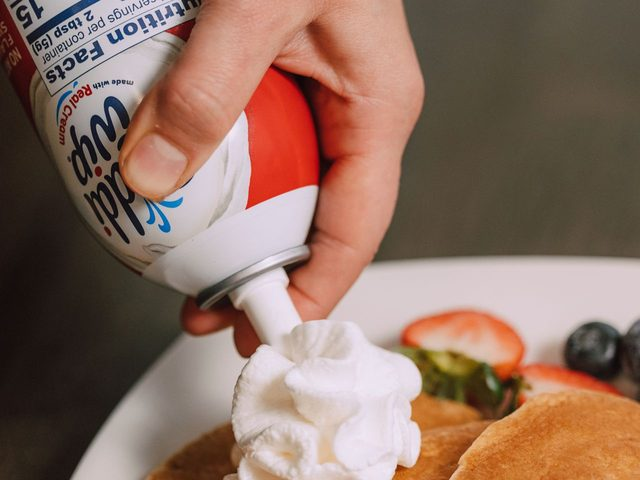
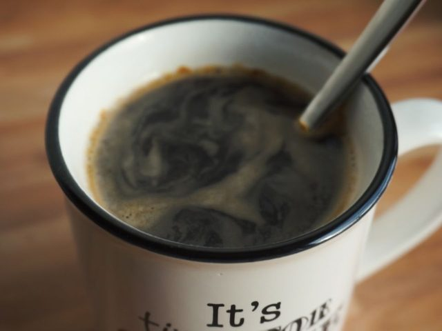
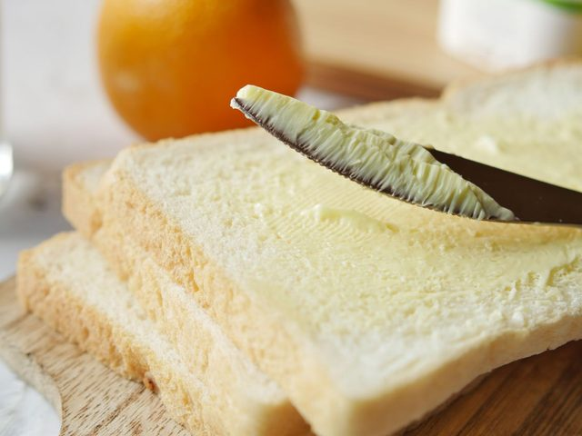

UNIT 10 · VOCABULARY
食物和飲料
Food & drink
41 個單字聽・唸・用
本單元單字一覽
水果、蔬菜、主食、飲料、甜點、調味料和味道，共 41 個。很多食物名詞不可數（seafood、flour、jam），要用 some 或 a piece of。
mangopineappletangerinecabbagecarrotcornlettucenutonionpotatocerealdumplingfast foodflourinstant noodlesseafoodshrimpspaghettitofubrunchsupperbeercolaliquidmilkshakesodasoft drinkdessertdoughnutmoon cakeketchupcreamjampeppersoy saucevinegarbittersourspreaddietslice
每個字都有 🔊，先聽發音、跟著唸，再看例句。
單字 1–4

mango
芒果n.
Taiwan mangoes are sweet and juicy.
台灣芒果又甜又多汁。
台灣芒果又甜又多汁。

pineapple
鳳梨n.
Pineapple cakes are a famous gift from Taiwan.
鳳梨酥是台灣有名的伴手禮。
鳳梨酥是台灣有名的伴手禮。

tangerine
橘子n.
People give tangerines to friends at Chinese New Year.
過年時大家會送朋友橘子。
過年時大家會送朋友橘子。

cabbage
高麗菜；甘藍菜n.
Mom makes dumplings with cabbage and pork.
媽媽用高麗菜和豬肉包水餃。
媽媽用高麗菜和豬肉包水餃。
單字 5–8

carrot
胡蘿蔔n.
Rabbits love to eat carrots.
兔子喜歡吃胡蘿蔔。
兔子喜歡吃胡蘿蔔。
corn
玉米n.
We had grilled corn at the night market.
我們在夜市吃了烤玉米。
我們在夜市吃了烤玉米。

lettuce
萵苣；生菜n.
Put some lettuce and tomato in the sandwich.
在三明治裡放一些生菜和番茄。
在三明治裡放一些生菜和番茄。

nut
堅果；核果n.
Squirrels hide nuts for the winter.
松鼠把堅果藏起來過冬。
松鼠把堅果藏起來過冬。
單字 9–12

onion
洋蔥n.
Cutting onions makes me cry.
切洋蔥讓我流眼淚。
切洋蔥讓我流眼淚。

potato
馬鈴薯n.
French fries are made from potatoes.
薯條是用馬鈴薯做的。
薯條是用馬鈴薯做的。

cereal
穀片；穀類n.
I have a bowl of cereal with milk every morning.
我每天早上吃一碗加牛奶的穀片。
我每天早上吃一碗加牛奶的穀片。

dumpling
水餃；餃子；湯圓n.
We eat rice dumplings at the Dragon Boat Festival.
我們在端午節吃粽子。
我們在端午節吃粽子。
單字 13–16

fast food
速食n.
Fast food is quick, but it isn't healthy.
速食很快，但不健康。
速食很快，但不健康。

flour
麵粉n.
You need flour, eggs, and milk to make a cake.
做蛋糕需要麵粉、蛋和牛奶。
做蛋糕需要麵粉、蛋和牛奶。

instant noodles
泡麵；速食麵n.
Instant noodles are ready in three minutes.
泡麵三分鐘就好了。
泡麵三分鐘就好了。

seafood
海鮮n.
Penghu is famous for fresh seafood.
澎湖以新鮮海鮮聞名。
澎湖以新鮮海鮮聞名。
單字 17–20

shrimp
蝦子；蝦仁n.
I'd like fried rice with shrimp, please.
我要一份蝦仁炒飯。
我要一份蝦仁炒飯。

spaghetti
義大利麵n.
Spaghetti with tomato sauce is my favorite.
番茄醬汁義大利麵是我的最愛。
番茄醬汁義大利麵是我的最愛。

tofu
豆腐n.
Stinky tofu smells bad but tastes good.
臭豆腐聞起來臭，吃起來香。
臭豆腐聞起來臭，吃起來香。

brunch
早午餐n.
We often have brunch at a café on Sundays.
我們星期天常去咖啡館吃早午餐。
我們星期天常去咖啡館吃早午餐。
單字 21–24

supper
晚餐；宵夜n.
We had a light supper before bed.
我們睡前吃了一頓簡單的晚餐。
我們睡前吃了一頓簡單的晚餐。

beer
啤酒n.
Dad drinks a glass of beer after work.
爸爸下班後喝一杯啤酒。
爸爸下班後喝一杯啤酒。

cola
可樂n.
Too much cola is bad for your teeth.
喝太多可樂對牙齒不好。
喝太多可樂對牙齒不好。

liquid
液體n.
You can't take liquids over 100 ml on a plane.
超過 100 毫升的液體不能帶上飛機。
超過 100 毫升的液體不能帶上飛機。
單字 25–28

milkshake
奶昔n.
I'll have a chocolate milkshake, please.
我要一杯巧克力奶昔。
我要一杯巧克力奶昔。

soda
汽水；蘇打水n.
Would you like some soda with your pizza?
你吃披薩要配汽水嗎？
你吃披薩要配汽水嗎？

soft drink
不含酒精的飲料；汽水n.
Only soft drinks are served at the school party.
學校派對只供應不含酒精的飲料。
學校派對只供應不含酒精的飲料。

dessert
甜點n.
We had ice cream for dessert.
我們吃冰淇淋當甜點。
我們吃冰淇淋當甜點。
單字 29–32

doughnut
甜甜圈n.
The police officer bought a doughnut and coffee.
那位警察買了甜甜圈和咖啡。
那位警察買了甜甜圈和咖啡。

moon cake
月餅n.
We eat moon cakes and watch the moon at the Moon Festival.
中秋節我們吃月餅、賞月。
中秋節我們吃月餅、賞月。

ketchup
番茄醬n.
Do you want ketchup on your hot dog?
你的熱狗要加番茄醬嗎？
你的熱狗要加番茄醬嗎？

cream
奶油；鮮奶油；乳霜n.
Put some cream on top of the cake.
在蛋糕上面加一些鮮奶油。
在蛋糕上面加一些鮮奶油。
單字 33–36

jam
果醬；塞車n.
I like toast with strawberry jam.
我喜歡吐司抹草莓果醬。
我喜歡吐司抹草莓果醬。

pepper
胡椒；甜椒n.
Add a little salt and pepper to the soup.
在湯裡加一點鹽和胡椒。
在湯裡加一點鹽和胡椒。

soy sauce
醬油n.
Dip the dumplings in soy sauce.
水餃沾醬油吃。
水餃沾醬油吃。

vinegar
醋n.
Vinegar makes the soup a little sour.
醋讓湯有點酸。
醋讓湯有點酸。
單字 37–40

bitter
苦的adj.
This medicine tastes bitter.
這個藥吃起來很苦。
這個藥吃起來很苦。

sour
酸的adj.
Lemons are very sour.
檸檬非常酸。
檸檬非常酸。

spread
塗；抹；展開；散布v.
Spread some butter on the bread.
在麵包上塗一些奶油。
在麵包上塗一些奶油。

diet
飲食；節食n.
Mom is on a diet, so she doesn't eat dessert.
媽媽在節食，所以不吃甜點。
媽媽在節食，所以不吃甜點。
單字 41–41

slice
片；薄片n.
Can I have another slice of pizza?
我可以再吃一片披薩嗎？
我可以再吃一片披薩嗎？
不可數的食物怎麼數
| 不可數名詞 | 單位 |
|---|---|
| bread | a slice of bread |
| cereal | a bowl of cereal |
| cola／soda | a can／glass of cola |
| flour | a bag of flour |
不可數名詞不加 -s，要用 a slice of、a bowl of、a glass of 等單位。
味道
| 味道 | 例子 |
|---|---|
| sweet 甜 | cake |
| sour 酸 | lemon、vinegar |
| bitter 苦 | black coffee、medicine |
| salty 鹹 | soy sauce |
說「嚐起來…」用 taste + 形容詞：This soup tastes sour.
快問快答：中文 → 英文
1芒果mango
2橘子tangerine
3胡蘿蔔carrot
4萵苣；生菜lettuce
5洋蔥onion
6穀片；穀類cereal
7速食fast food
8泡麵；速食麵instant noodles
快問快答：英文 → 中文
1shrimp蝦子；蝦仁
2tofu豆腐
3supper晚餐；宵夜
4cola可樂
5milkshake奶昔
6soft drink不含酒精的飲料；汽水
7doughnut甜甜圈
8ketchup番茄醬
學完了！接下來
複習方法
review
- 回到「📗 單字卡」，按「遮中文」自己考自己
- 再按「遮英文」，看中文說出英文
- 每個例句跟著 🔊 唸一次
準備好了
- 按右上角「📝 前往測驗」
- 測驗錯的題目要訂正到全對
- 訂正完成補送 1 點